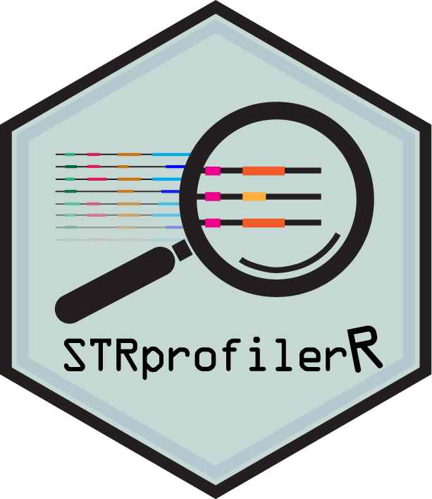

STR profiles of patient-derived models from JAX and the NCI PDMR
Source:R/data.R
pdxSTRProfiles.RdReference STR profiles for 1,258 patient-derived models: 435 from The
Jackson Laboratory PDX program and 823 from the NCI Patient-Derived Models
Repository (PDMR). This is the default database of STRprofilerApp(), and
can be passed as the reference of compareProfiles() or scoreProfiles()
to check models against it.
Usage
data(pdxSTRProfiles)Format
A STRProfiles object of 1,258 samples typed at 18 markers:
amelogenin and 17 autosomal STRs (the 13 CODIS core loci plus D2S1338,
D19S433, Penta D, and Penta E). sampleData() holds
CenterSource of the model,
"JAX"or"PDMR".PassagePassage of the profiled material, where recorded.
nDroppedCallsCalls dropped at ingest as not being alleles (see
readSTRProfiles()).
Source
Profiles provided by
The Jackson Laboratory PDX program
and the NCI PDMR, as compiled for the default
database of the strprofiler Python package (0.5.1,
strprofiler/shiny_app/www/main_database.csv), and redistributed here under
the package's MIT license. See inst/scripts/README.md.
Details
Built by inst/scripts/make-pdxSTRProfiles.R, which reads
inst/extdata/main_database.csv with readSTRProfiles() defaults. The raw
file is kept alongside, as an example of a database file with metadata
columns:
Twenty-two samples each carry one call that is not an allele (mostly OL,
off-ladder), dropped at ingest and counted in nDroppedCalls.
References
Andrews JM, Lloyd MW, Neuhauser SB, Bundy M, Jocoy EL, Airhart SD, Bult CJ, Evrard YA, Chuang JH, Baker S (2024). STRprofiler: efficient comparisons of short tandem repeat profiles for biomedical model authentication. Bioinformatics, btae713. doi:10.1093/bioinformatics/btae713 .
Examples
data(pdxSTRProfiles)
pdxSTRProfiles
#> class: STRProfiles
#> samples(1258): J000077451 J000077591 ... K98450 SA0426
#> markers(18): Amelogenin CSF1PO ... PentaE PentaD
#> sampleData(3): Center Passage nDroppedCalls
#> markerClass: amelogenin(1) autosomal(17)
#> source(1): main_database.csv
table(sampleData(pdxSTRProfiles)$Center)
#>
#> JAX PDMR
#> 435 823
# Check a batch of models against it.
batch <- readSTRProfiles(
system.file("extdata", "Example_Batch_File.csv", package = "STRprofilerR")
)
cmp <- compareProfiles(batch, pdxSTRProfiles)
summary(cmp)[, c("Sample", "mixed", "topHit")]
#> DataFrame with 3 rows and 3 columns
#> Sample mixed topHit
#> <character> <logical> <character>
#> Sample_A Sample_A FALSE J000077451: 100.00
#> Sample_B Sample_B FALSE J000077960: 85.71
#> Sample_C Sample_C FALSE J000078366: 100.00